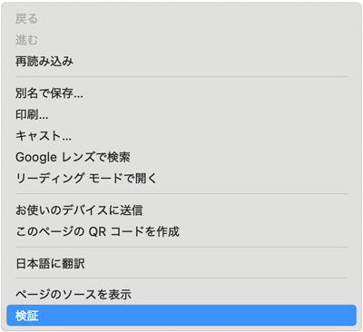
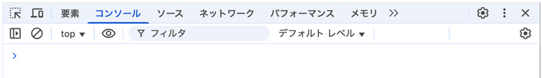
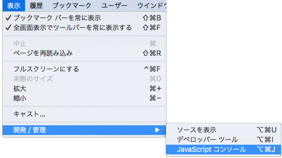

プログラミング言語 / JavaScriptとは
JavaScript
2025/10/01
- コンピューターへのお願いする言語
- 複雑なタスクを処理する「プログラム（アルゴリズム）」を考えるのは人間
- コンパイル型（プログラムを実行する前に、機械が読める言語（0と1のデータ群）に翻訳する言語）
- インタプリタ型（プログラムを実行しながら、機械が読める言語に少しずつ翻訳する言語）
- 「ジャヴァ」ではなく、「ジャバスクリプト」です
- 「Java（ジャヴァ）」は、別の言語なので間違わないようにしましょう
- ブラウザを操作するためのプログラミング言語
- インタプリタ型言語
- JavaScriptを使うと、静止したデータであるHTMLやCSSを、その場でリアルタイムに書き換えて、一部のコンテンツを入れ替えたり、画像のスライドショーのような動きをつけたりすることができます
- HTMLやCSSだけではできないことをする
- ブラウザに表示されているHTMLやCSSをリアルタイムに書き換える
- ブラウザに表示されているHTMLやCSSから情報を読み取る
- 「JavaScriptの言語文法」と「ブラウザの操作の仕組み」の２つを理解する必要があります
- 1995年 NetscapeNavigator2.0に搭載（旧名：LiveScript）
- 1996年 Internet Explorer3.0にJavaScriptに似た言語 JScriptを搭載（※互換性がない）
- 1997年 ECMAScript1 初版
- 1998年 ECMAScript2
- 1999年 ECMAScript3 Internet Explorer6でも動く（最も知られている。jQueryが普及。）
- 2009年 ECMAScript5 現行ブラウザでは、ほぼ確実に動作する
- 2015年 ECMAScript2015（ES6から改名）現行ブラウザーで動かない場合も
- 2016年 ECMAScript2016 現行ブラウザーで動かない場合も
- IoTでは、センサーから情報を読み取って何かを処理することは、JavaScriptのプログラミングで可能です
- マウスクリックでコンテンツ表示を切り替える
- 一定時間ごとに、何かの処理を繰り返す
- サイトやデザインの内容を動的に変更する
- 入力フォームの内容をチェックする
- 他のWebページやサイトのデータのやり取りをする（Ajax）
- イメージとしては「インプット → 加工 → アウトプット」
- 入力された値（または初期値） → 処理（命令） → 出力（ブラウザーに表示）
- プログラムは、ブラウザーに内蔵されているJavaScriptの実行エンジンが実行します
学習をはじめるにあたって
- ミスタイプに注意して入力する
- 動作がうまく行かない場合は、入力ミスがないか見直します
- わからない「語句」などは、「MDN」を利用して調べながら進めます


